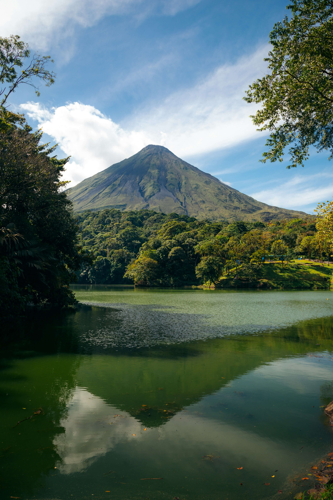
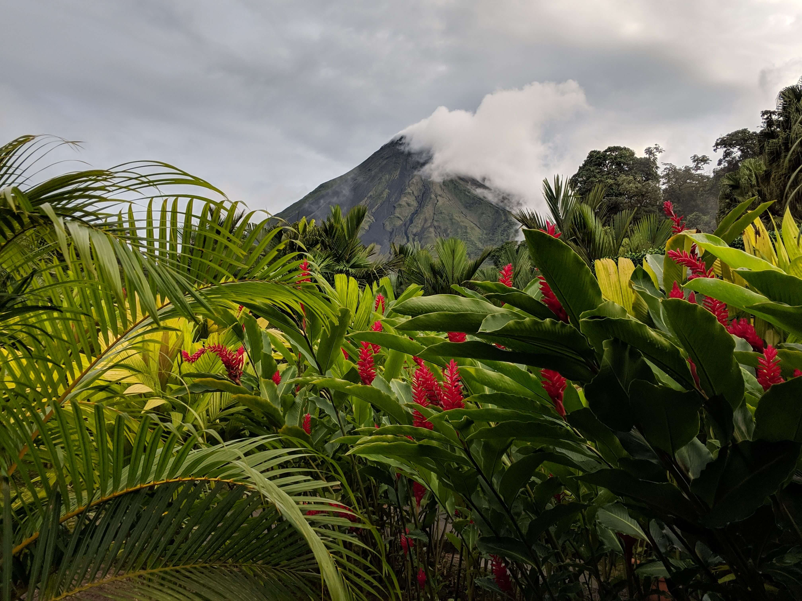
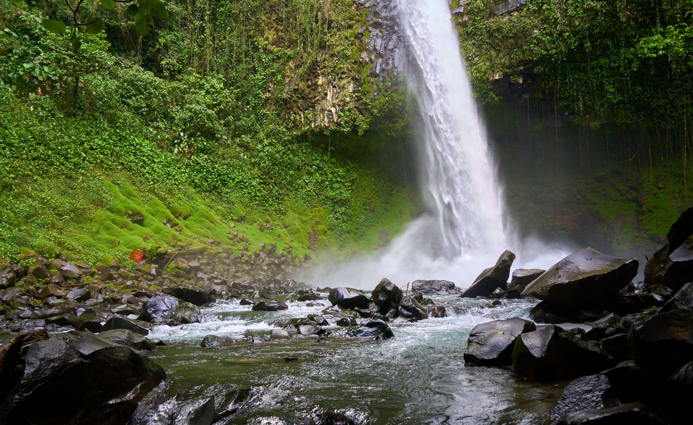
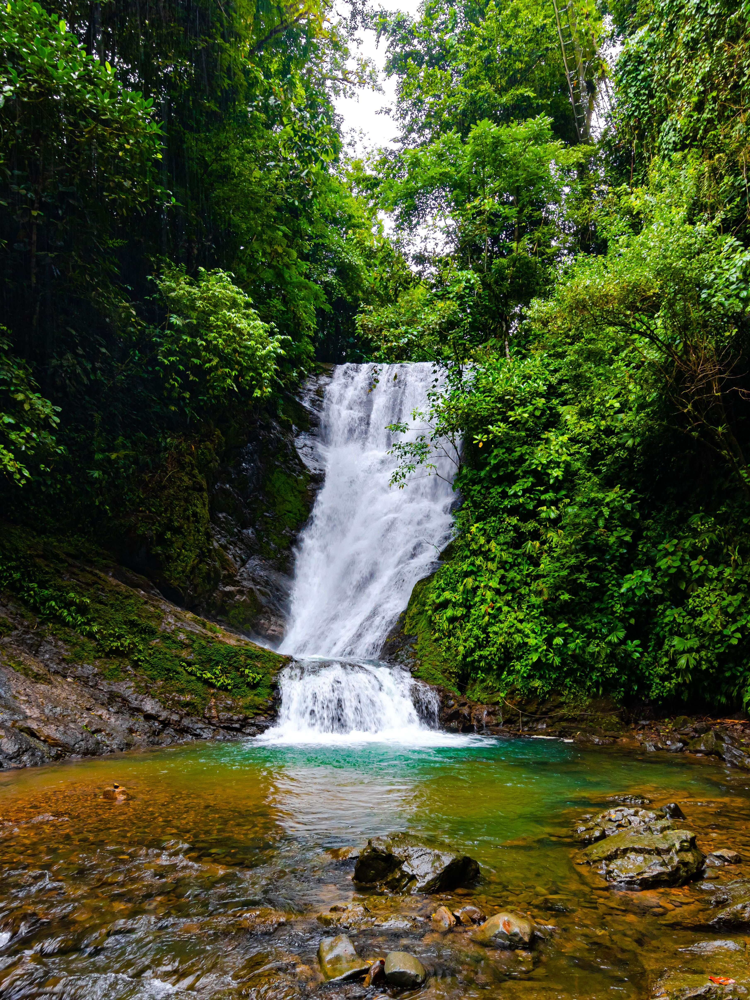
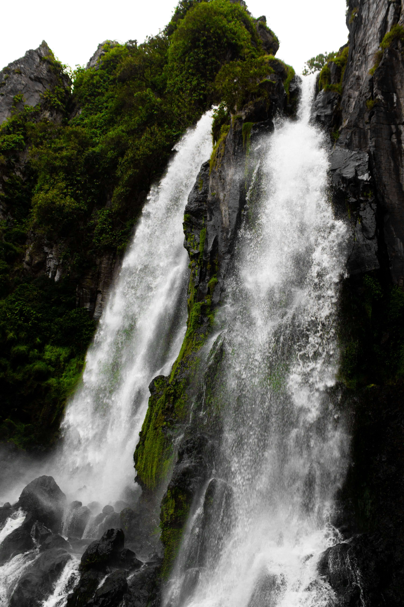

The Best Hot Springs in La Fortuna: Which One Should You Choose?
Updated: July 2026 | By Local Expert & Traveler

La Fortuna is famous for the Arenal Volcano, but the real star of the show are the natural hot springs. These geothermal pools are heated by the volcano's internal magma, creating a perfect environment for relaxation and health. Whether you are looking for luxury or a free experience, here is the ultimate comparison.
AdSense In-Article Ad
1. Tabacon Thermal Resort (Luxury Choice)
Tabacon is often considered the most beautiful hot spring in Costa Rica. Unlike other resorts that pump water into pools, Tabacon is 100% natural, featuring a river that flows through lush tropical gardens.

- Pros: Completely natural, stunning gardens, very romantic and exclusive.
- Cons: Highest price in town (Day passes start at $75 - $100+).
2. Baldi Hot Springs (Best for Families)
If you are traveling with kids or looking for fun, Baldi is the place to be. It is one of the largest facilities in the world, featuring 25 different thermal pools with temperatures ranging from 93°F to 152°F.

The highlight of Baldi is its giant water slides and multiple swim-up bars. It feels more like a thermal theme park than a quiet retreat.
- Pros: Great for children, many options, includes a great buffet dinner.
- Cons: It can get very loud and crowded during weekends.
3. El Chollin (The Free Option)
Did you know you can enjoy the same volcanic water as Tabacon for **free**? Just next to the Tabacon entrance, there is a public access to the river known as "El Chollin".

It’s a favorite spot for locals. You can bring your own drinks and sit under the warm rapids of the river. There are no facilities (no bathrooms or lockers), so keep an eye on your belongings.
- Pros: 100% Free, authentic local experience.
- Cons: No security, no lights at night, can be very crowded.
Plan Your Next Adventure

La Fortuna Waterfall Guide
Don't miss the chance to swim in the most famous waterfall in Costa Rica. We have the latest prices and tips for the 500-step hike.
Read the Waterfall GuideAdSense Matched Content Area